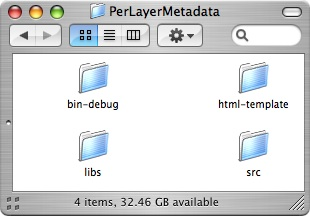
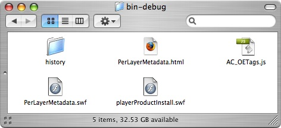
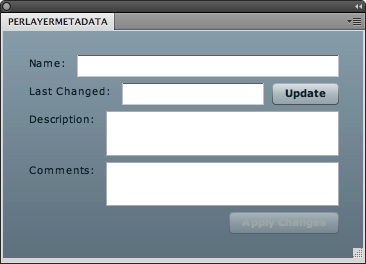

Per Layer Metadata Panel: ActionScript
The fifth part of the Per Layer Metadata Panel is programming the Adobe Photoshop Panel to communicate with JavaScript using ActionScript and the CSXS Library. The developer will first create unique identification names for the control components in the design area. The developer will then program in ActionScript set comment and description of the layer metadata, check the user's input metadata fields, and retrieve the layer metadata to update the control components. The developer will program in ActionScript to create an initial function, a function to prevent the user to create a new line or carriage return, and a flyout menu to export the layer metadata. The developer will program in ActionScript to register events, and a utility function to convert a character ID code to an integer. After programming in ActionScript, the developer will copy the Adobe Flex Builder produced SWF file to the Adobe Photoshop Panels folder. The result is a Per Layer Metadata Panel displaying the layer's name, the layer's last changed date and time with an update button, the layer's description, the layer's comments, and a button to apply changes of the metadata. The Per Layer Metadata Panel also has a flyout menu allowing the user to export the layer metadata.
Instructions:
- Complete Placing and Using the CSXS Library.
- Go to Source Mode by selecting Source under the PerLayerMetadata.mxml tab or go to Window > Switch Source/Design Mode. The initial code should look similar to the following:
<?xml version="1.0" encoding="utf-8"?> <mx:Application xmlns:mx="http://www.adobe.com/2006/mxml" layout="vertical"> <mx:HBox width="100%"> <mx:Label text="Name:"/> <mx:TextInput width="100%" height="100%" editable="false"/> </mx:HBox> <mx:HBox width="100%"> <mx:Label text="Last Changed:"/> <mx:TextInput width="100%" height="100%" editable="false"/> <mx:Button label="Update"/> </mx:HBox> <mx:HBox width="100%" height="100%"> <mx:Label text="Description:"/> <mx:TextArea width="100%" height="100%"/> </mx:HBox> <mx:HBox width="100%" height="100%"> <mx:Label text="Comments:"/> <mx:TextArea width="100%" height="100%"/> </mx:HBox> <mx:HBox width="100%" horizontalAlign="right"> <mx:Button label="Apply Changes"/> </mx:HBox> </mx:Application> - The red colored text are the changes made to PerLayerMetadata.mxml:
<?xml version="1.0" encoding="utf-8"?> <mx:Application xmlns:mx="http://www.adobe.com/2006/mxml" layout="vertical"> <mx:Script> <![CDATA[ import com.adobe.csxs.core.CSXSInterface; import com.adobe.csxs.events.*; import com.adobe.csxs.types.*; public function setPSLayerMetadata():void{ CSXSInterface.instance.evalScript("setDescMetadata", evalStringChecker(description.text)); CSXSInterface.instance.evalScript("setCommMetadata", evalStringChecker(comments.text)); } public function evalStringChecker(inString:String):String{ var tokens:Array = inString.split("'"); var joined:String = tokens.join("\\'"); tokens = joined.split('"'); joined = tokens.join('\\"'); return(joined); } public function getPSLayerMetadata():void{ var reqResult:SyncRequestResult = CSXSInterface.instance.evalScript("getLayerMetadata"); if(SyncRequestResult.COMPLETE == reqResult.status){ layerName.text = reqResult.data.layerName; lastChanged.text = reqResult.data.layerChangedDate; description.text = reqResult.data.description; comments.text = reqResult.data.comments; } } ]]> </mx:Script> <mx:HBox width="100%"> <mx:Label text="Name:"/> <mx:TextInput width="100%" height="100%" id="layerName" editable="false"/> </mx:HBox> <mx:HBox width="100%"> <mx:Label text="Last Changed:"/> <mx:TextInput width="100%" height="100%" id="lastChanged" editable="false"/> <mx:Button label="Update" id="update" click="getPSLayerMetadata()"/> </mx:HBox> <mx:HBox width="100%" height="100%"> <mx:Label text="Description:"/> <mx:TextArea width="100%" height="100%" id="description" change="apply.enabled=true"/> </mx:HBox> <mx:HBox width="100%" height="100%"> <mx:Label text="Comments:"/> <mx:TextArea width="100%" height="100%" id="comments" change="apply.enabled=true"/> </mx:HBox> <mx:HBox width="100%" horizontalAlign="right"> <mx:Button label="Apply Changes" id="apply" click="apply.enabled=false; setPSLayerMetadata();"/> </mx:HBox> </mx:Application>
Code Walkthrough: The ActionScript will have three imports from CSXSLibrary.swc as shown above to allow communication between the Per Layer Metadata JavaScript file and the Per Layer Metadata Panel. The function
setPSLayerMetadatacall the functionssetDescMetadataandsetCommMetadatain PerLayerMetadata.jsx by passing the text in the description and comments text field and set as metadata for the layer. The functionevalStringCheckerchecks the description and comments text field ensuring that all quotation marks (") and apostrophe (') each have a preceding double backward slash (\\) in order for JavaScript to properly and correctly process the string. The functiongetPSLayerMetadatacall the functiongetDescMetadatafrom the PerLayerMetadata.jsx and set the fields of the layer name, the date and time when the layer was last changed, the description metadata, and the user comments metadata. - The red colored text are the changes made to PerLayerMetadata.mxml:
<?xml version="1.0" encoding="utf-8"?> <mx:Application xmlns:mx="http://www.adobe.com/2006/mxml" layout="vertical" creationComplete="init()"> <mx:Script> <![CDATA[ import com.adobe.csxs.core.CSXSInterface; import com.adobe.csxs.events.*; import com.adobe.csxs.types.*; public function setPSLayerMetadata():void{ CSXSInterface.instance.evalScript("setDescMetadata", evalStringChecker(description.text)); CSXSInterface.instance.evalScript("setCommMetadata", evalStringChecker(comments.text)); } public function evalStringChecker(inString:String):String{ var tokens:Array = inString.split("'"); var joined:String = tokens.join("\\'"); tokens = joined.split('"'); joined = tokens.join('\\"'); return(joined); } public function getPSLayerMetadata():void{ var reqResult:SyncRequestResult = CSXSInterface.instance.evalScript("getLayerMetadata"); if(SyncRequestResult.COMPLETE == reqResult.status){ layerName.text = reqResult.data.layerName; lastChanged.text = reqResult.data.layerChangedDate; description.text = reqResult.data.description; comments.text = reqResult.data.comments; } } public function init():void{ getPSLayerMetadata(); apply.enabled = false; description.addEventListener(TextEvent.TEXT_INPUT, textChecker); comments.addEventListener(TextEvent.TEXT_INPUT, textChecker); var xmlMenu:XML = <Menu><MenuItem Label="Export Raw Data"/></Menu>; CSXSInterface.getInstance().setPanelMenu(xmlMenu); CSXSInterface.getInstance().addEventListener(MenuClickEvent.FLYOUT_MENU_CLICK, menuHandler); } public function textChecker(char:TextEvent):void{ if(char.text == "\n" || char.text == "\r" || char.text == "\t"){ char.preventDefault(); } } public function menuHandler(inEvent:MenuClickEvent):void{ if("Export Raw Data" == inEvent.menuName){ CSXSInterface.instance.evalScript("exportLayerMetadata"); } } ]]> </mx:Script> <mx:HBox width="100%"> <mx:Label text="Name:"/> <mx:TextInput width="100%" height="100%" id="layerName" editable="false"/> </mx:HBox> <mx:HBox width="100%"> <mx:Label text="Last Changed:"/> <mx:TextInput width="100%" height="100%" id="lastChanged" editable="false"/> <mx:Button label="Update" id="update" click="getPSLayerMetadata()"/> </mx:HBox> <mx:HBox width="100%" height="100%"> <mx:Label text="Description:"/> <mx:TextArea width="100%" height="100%" id="description" change="apply.enabled=true"/> </mx:HBox> <mx:HBox width="100%" height="100%"> <mx:Label text="Comments:"/> <mx:TextArea width="100%" height="100%" id="comments" change="apply.enabled=true"/> </mx:HBox> <mx:HBox width="100%" horizontalAlign="right"> <mx:Button label="Apply Changes" id="apply" click="apply.enabled=false; setPSLayerMetadata();"/> </mx:HBox> </mx:Application>
Code Walkthrough: The
creationCompleteparameter insidemx:Applicationtag is like a constructor in Object-Oriented Programming. The functioninitis called bycreationCompleteto initialize the metadata fields, set the apply changes button to false, add event handlers to thedescriptionandcommentstext area control components with the functiontextChecker, and construct the flyout menu to export raw data with the functionmenuHandler. The functiontextCheckerensures that the description and comments metadata fields will not have any new line, carriage return, or tab characters that can cause problems to the functionsetPSLayerMetadata. The functionmenuHandlercalls theexportLayerMetadatafunction in the Per Layer Metadata JavaScript file when the item in the flyout menu is selected. - The red colored text are the changes made to the Script tag in PerLayerMetadata.mxml:
<mx:Script> <![CDATA[ import com.adobe.csxs.core.CSXSInterface; import com.adobe.csxs.events.*; import com.adobe.csxs.types.*; public function setPSLayerMetadata():void{ CSXSInterface.instance.evalScript("setDescMetadata", evalStringChecker(description.text)); CSXSInterface.instance.evalScript("setCommMetadata", evalStringChecker(comments.text)); } public function evalStringChecker(inString:String):String{ var tokens:Array = inString.split("'"); var joined:String = tokens.join("\\'"); tokens = joined.split('"'); joined = tokens.join('\\"'); return(joined); } public function getPSLayerMetadata():void{ var reqResult:SyncRequestResult = CSXSInterface.instance.evalScript("getLayerMetadata"); if(SyncRequestResult.COMPLETE == reqResult.status){ layerName.text = reqResult.data.layerName; lastChanged.text = reqResult.data.layerChangedDate; description.text = reqResult.data.description; comments.text = reqResult.data.comments; } } public function init():void{ getPSLayerMetadata(); apply.enabled = false; description.addEventListener(TextEvent.TEXT_INPUT, textChecker); comments.addEventListener(TextEvent.TEXT_INPUT, textChecker); var xmlMenu:XML = <Menu><MenuItem Label="Export Raw Data"/></Menu>; CSXSInterface.getInstance().setPanelMenu(xmlMenu); CSXSInterface.getInstance().addEventListener(MenuClickEvent.FLYOUT_MENU_CLICK, menuHandler); CSXSInterface.instance.evalScript("PhotoshopRegisterEvent", charToInteger("Opn ").toString()); CSXSInterface.instance.evalScript("PhotoshopRegisterEvent", charToInteger("setd").toString()); CSXSInterface.instance.evalScript("PhotoshopRegisterEvent", charToInteger("Mk ").toString()); CSXSInterface.instance.evalScript("PhotoshopRegisterEvent", charToInteger("slct").toString()); ExternalInterface.addCallback("PhotoshopCallback", PhotoshopCallback); } public function charToInteger(keyword:String):Number{ var value:Number; value = keyword.charCodeAt(0) * 256 * 256 * 256; value += keyword.charCodeAt(1) * 256 * 256; value += keyword.charCodeAt(2) * 256; value += keyword.charCodeAt(3); return value; } public function PhotoshopCallback(eventID:Number, descID:Number):void{ if( eventID == charToInteger("Opn ") || eventID == charToInteger("setd") || eventID == charToInteger("Mk ") || eventID == charToInteger("slct")) { getPSLayerMetadata(); apply.enabled=false; } } public function textChecker(char:TextEvent):void{ if(char.text == "\n" || char.text == "\r" || char.text == "\t"){ char.preventDefault(); } } public function menuHandler(inEvent:MenuClickEvent):void{ if("Export Raw Data" == inEvent.menuName){ CSXSInterface.instance.evalScript("exportLayerMetadata"); } } ]]> </mx:Script>Code Walkthrough: The function
initalso setsOpn,setd,Mk, andslctas registered events using with the parameterPhotoshopRegisterEvent. Note: For more information aboutPhotoshopRegisterEvent, see Adobe Photoshop Reserved Words including how to unregister an event. Lastly, the functioninitincludesPhotoshopCallbackto monitor events in Adobe Photoshop. The functioncharToIntegertakes a string parameter calledkeywordand returns a convertedNumberreturned as value understood as a Photoshop event. Note: The parameterkeywordmust be four characters long since there is no error checking if it is three characters or less. The functionPhotoshopCallbacktakes in parametereventIDanddescIDto executegetPSLayerMetadataand set the apply changes button to false whenever an eventOpn,setd,Mk, andslcthas occurred in Adobe Photoshop. - Go to Run > Run PerLayerMetadata to preview the design area in the web browser.
- Close the web browser.
- Close Adobe Flex Builder.
- Open the PerLayerMetadata folder on the desktop.
 - Open the bin-debug folder.
 - Copy PerLayerMetadata.swf into the Panels folder under the Adobe Photoshop CS5\Plug-ins\ folder located under:
- Applications for Macintosh
- Program Files for Windows
- Copy PerLayerMetadata.jsx from the Panels folder into the bin-debug folder under the PerLayerMetadata folder on the Desktop.
- Open Adobe Photoshop.
- Go to Windows > Extensions > PerLayerMetadata.
- The Per Layer Metadata Panel opens as a panel like seen below:
